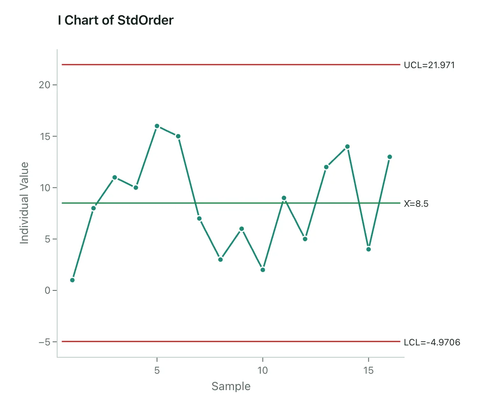
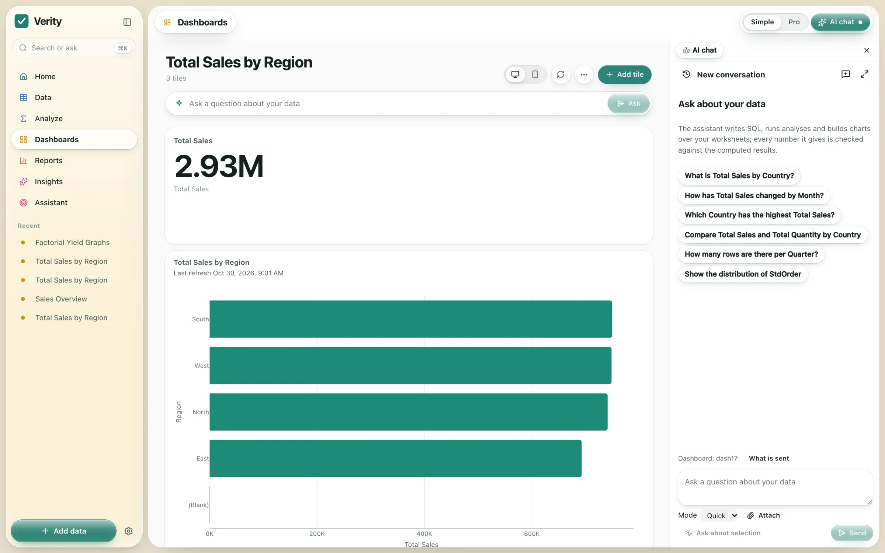
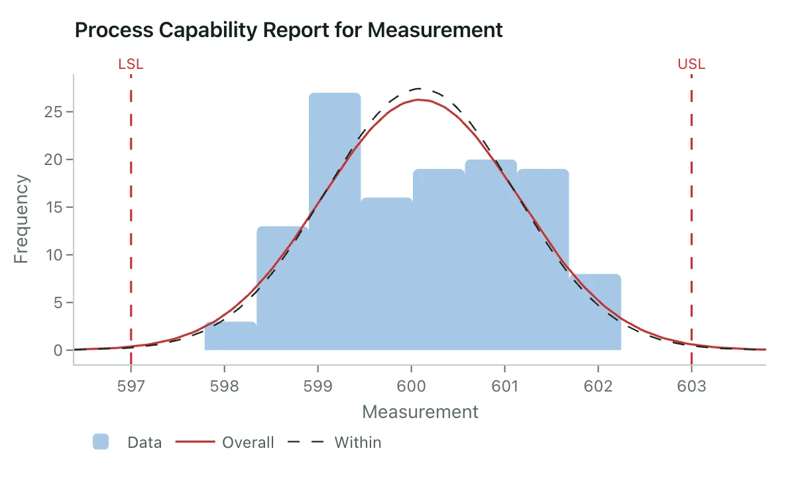

Control charts
I-MR, Xbar-R and more, with control limits and stability checks worked out for you.

Worksheets, statistics, control charts, dashboards and an AI analyst in one calm app. Your files stay on your machine.
Free for 14 days · No account needed · Mac with Apple silicon or 64-bit Windows 10 and 11
Verity is a desktop app. Open this page on your Mac or PC to install it.

Statistics
Pick a worksheet, pick an analysis, and Verity draws the chart and explains the result in plain language.
I-MR, Xbar-R and more, with control limits and stability checks worked out for you.

Cp, Cpk, Pp and Ppk from your spec limits, with the histogram and fitted curves.

Hypothesis tests, ANOVA and regression with clear summaries.
Factorial and response surface designs, with effects plots.
Check your measurement system before you trust the data.
Validated against the NIST reference datasets.
AI analyst
Uses your own Anthropic API key, added in Settings › AI.
Everything in one window
Excel, CSV and PDF files, or connect a database.
A fast grid with a calculator and a profile of every column.
KPIs, charts and tables you refresh in one click.
Export analyses and reports to PDF to share.
Install
Download, open, and start with the built-in sample data or your own file.
Apple silicon (M1 or newer) · 316 MB
64-bit Windows 10 or 11 · 179 MB
Why the warning? This first version isn't signed by Apple or Microsoft yet, so each shows a one-time check.